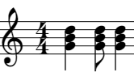
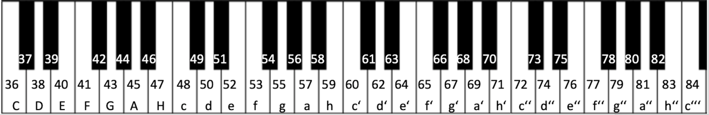

Aufgaben
Aufgabe 1
-
1. Erstelle in Snap! die leitereigenen Dreiklänge von der Stufe I-V-VI-IV der G-Dur-Tonleiter.
2. Ändere nun den Rhythmus deiner 4 nacheinander abspielenden Dreiklänge zu diesem Rhythmus ab:

3. Ändere nun die 4 Dreiklänge so um, dass möglichst keine oder nur kleine Sprünge entstehen.
